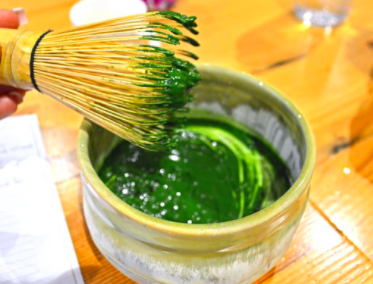
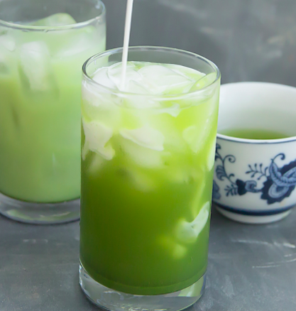
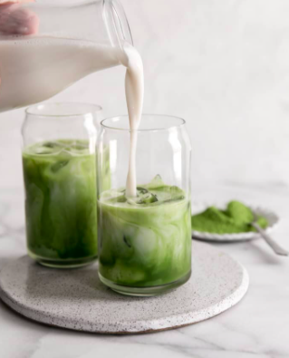

As you spoon the matcha powder into the cup, add in the warm water while using a wisk. Using a wisk wil ensure the perfect consistency, which will end up like a paste.
To your matcha paste created from the matcha powder and warm water, now choose your milk of choice. If you want your milk warm, heat it up in a sauce pan, but if you want your milk cold you can pour it right over the paste. Once your milk in added to your cup use your wisk again to mix the paste and the milk together until smooth.
Now that you have your matcha latte, you can add any finishing touches you would like! Adding in some ice can keep your drink cool for longer, or even adding some cinnamon can give your latte the perfect spice.
This is where you can buy some of the best matcha powder
"